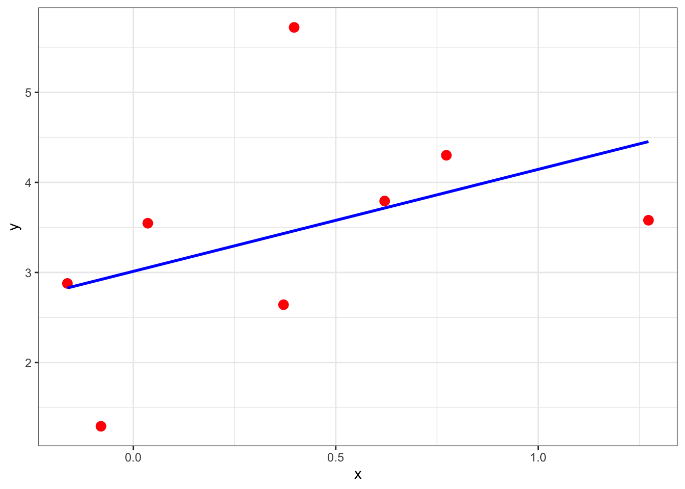
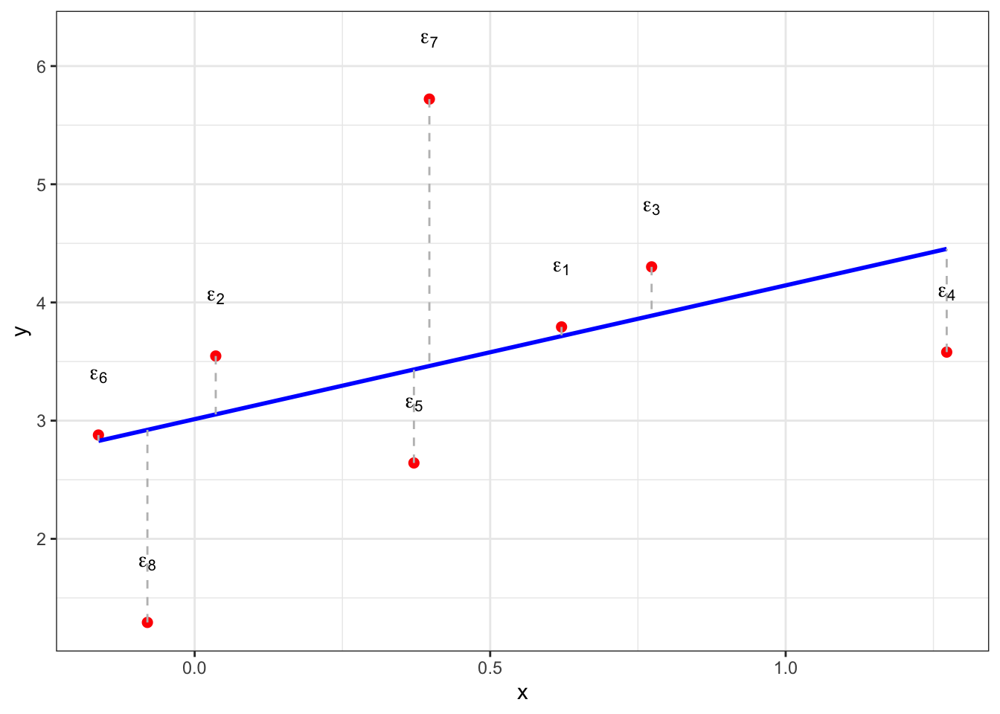
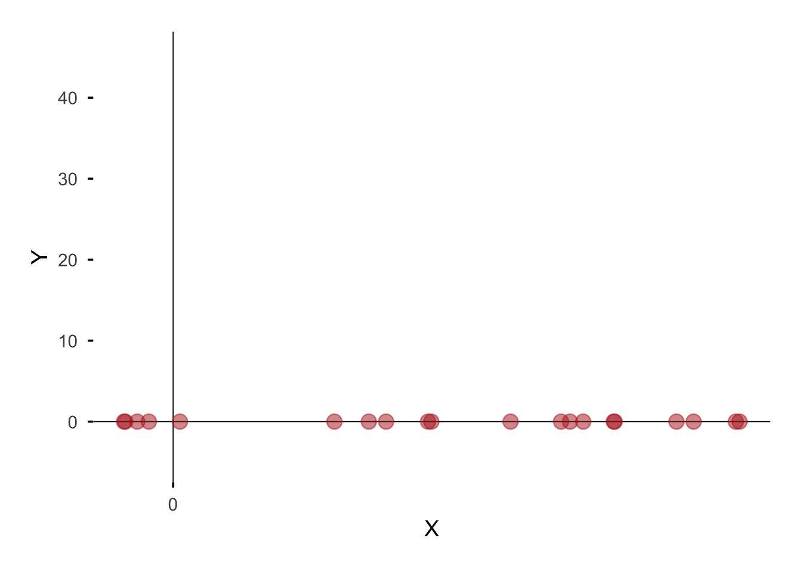
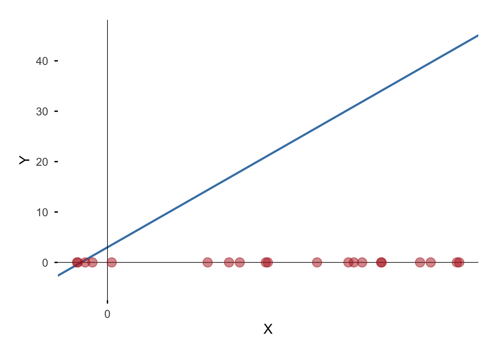
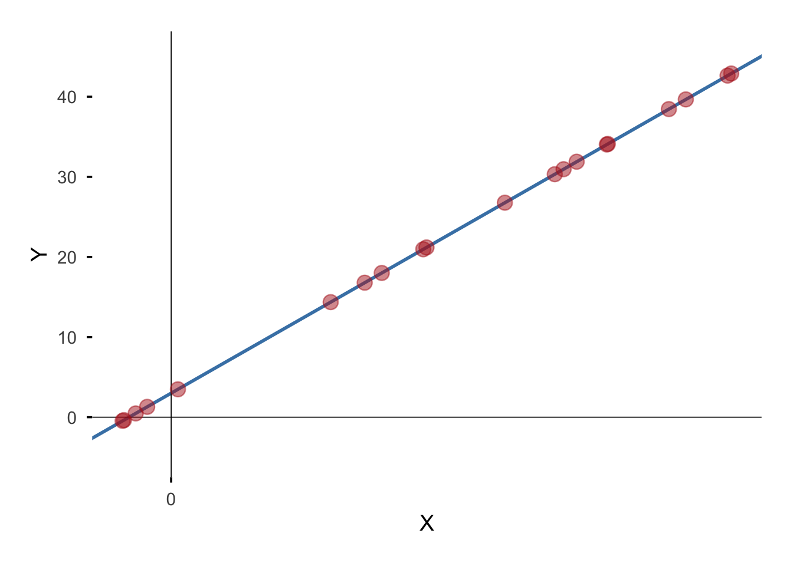
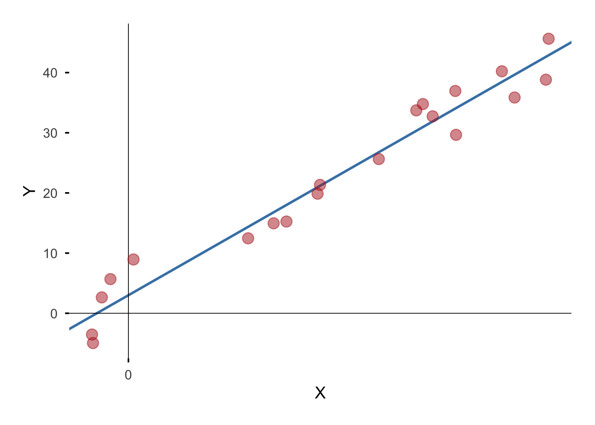

In this lecture we will introduce Simple Linear Regression (SLR) to model the relationship between two numerical variables.
We will quantify the relationship between variables using popular metrics like the Correlation Coefficient and \(R^2\) value.
Statistical inference for this model will be discussed, and the critical distinction between inference for mean response and inference for the outcome will be clarified.
We will also introduce a basic understanding of the multiple regression model.
Recall: Scatterplots
Line of Best fit
# Fit a linear modelmodel <-lm(y ~ x, data = atib)# Plot data with regression line onlyggplot(atib, aes(x = x, y = y)) +geom_point(color ="red", size =3) +# Data pointsgeom_smooth(method ="lm", se =FALSE, color ="blue") +# Regression linetheme_bw() +# Match scatterplot themelabs(title =NULL) # No title
`geom_smooth()` using formula = 'y ~ x'

Visualization of Residuals
# Add fitted values and residuals to the dataatib <- atib %>%mutate(fitted = model$fitted.values,resid = model$residuals,label =paste0("epsilon[", row_number(), "]"))ggplot(atib, aes(x = x, y = y)) +geom_point(color ="red", size =2) +# Original data pointsgeom_smooth(method ="lm", se =FALSE, color ="blue") +# Regression linegeom_segment(aes(xend = x, yend = fitted), # Residual lineslinetype ="dashed", color ="gray") +geom_text(aes(label = label, y = y +0.5), parse =TRUE) +# Epsilon labelstheme_bw() +# Match themelabs(title =NULL) # Remove title to match scatterplot
`geom_smooth()` using formula = 'y ~ x'

What is regression
Regression analysis is a tool to investigate how two or more variables are related.
“The general objective of a regression analysis is to determine the relationship between two (or more) variables so that we can gain information about one of them through knowing values of the other(s).”
We want to see how a specific response variable, \(Y\) is affected by one or more explanatoryvariables\(X_1, \dots, X_p\)
\(Y\) is also known as the dependentvariable or output variable. This variable is continuous (i.e. numeric data type)
\(X_i\)’s are also known as independent/predictor variables or features. These may be continuous or categorical; however, we only consider continuous predictors in this course.
Example
One may wish to use a person’s height, gender and race to predict a person’s weight. What is/are the response variable(s)?
Height
Gender
Race
Weight
Example
One may wish to use a person’s height, gender and race to predict a person’s weight. What is/are the dependent variable(s)?
x =runif(n, min =-2, max =10) # or runif() / rnorm()
g =ggplot(df, aes(x = x, y = y)) +geom_point(color =NA) +# add the pointsgeom_abline(intercept = beta0, slope = beta1, color ="steelblue", linewidth =0, color =NA) +geom_hline(yintercept =0, linewidth =0.3) +geom_vline(xintercept =0, linewidth =0.3) +scale_x_continuous(breaks =seq(0, 100, 25)) +labs(x ="X", y ="Y") +theme_minimal(base_size =14) +theme(panel.grid =element_blank(),axis.line =element_blank(),axis.ticks =element_line(),plot.margin =margin(20, 20, 20, 20) )
Warning: Duplicated aesthetics after name standardisation: colour
# Add both point layersg +geom_point(data = df, aes(x = x, y =0), color ="firebrick", size =4, shape =21, fill ="firebrick", alpha =0.5)
Warning: Removed 20 rows containing missing values or values outside the scale range
(`geom_point()`).

For \(\beta_0\) = beta0 = 3, \(\beta_1\) = beta1 = 4, we have
\[Y = 3 + 4 \cdot X\]
g =ggplot(df, aes(x = x, y = y)) +geom_point(color =NA) +# add the pointsgeom_abline(intercept = beta0, slope = beta1, color ="steelblue", linewidth =1) +geom_hline(yintercept =0, linewidth =0.3) +geom_vline(xintercept =0, linewidth =0.3) +scale_x_continuous(breaks =seq(0, 100, 25)) +labs(x ="X", y ="Y") +theme_minimal(base_size =14) +theme(panel.grid =element_blank(),axis.line =element_blank(),axis.ticks =element_line(),plot.margin =margin(20, 20, 20, 20) )# Add both point layersg +geom_point(data = df, aes(x = x, y =0), color ="firebrick", size =4, shape =21, fill ="firebrick", alpha =0.5)
Warning: Removed 20 rows containing missing values or values outside the scale range
(`geom_point()`).

# Add both point layersg +geom_point(data = df, aes(x = x, y = beta0 + beta1*x), color ="firebrick", size =4, shape =21, fill ="firebrick", alpha =0.5)
Warning: Removed 20 rows containing missing values or values outside the scale range
(`geom_point()`).

# Add both point layersg +geom_point(data = df, aes(x = x, y = y), color ="firebrick", size =4, shape =21, fill ="firebrick", alpha =0.5)
Warning: Removed 20 rows containing missing values or values outside the scale range
(`geom_point()`).

References
References
Devore, J. L., K. N. Berk, and M. A. Carlton. 2021. Modern Mathematical Statistics with Applications. Springer Texts in Statistics. Springer International Publishing. https://books.google.ca/books?id=ghcsEAAAQBAJ.